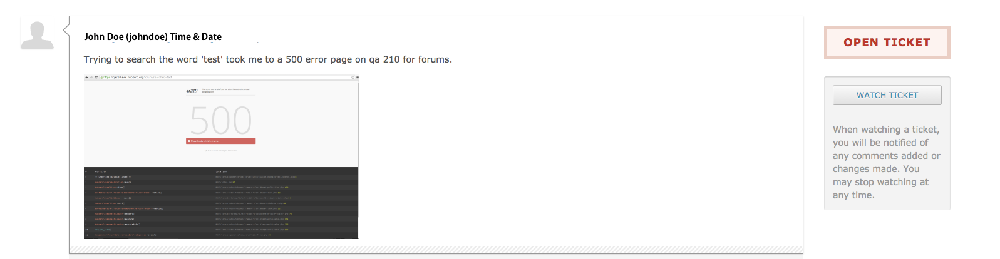

Hub managers
Support Tickets
Users open a ticket when something on the hub goes wrong and neither Questions and Answers nor the Knowledge Base answers it. Administrators work those tickets in the Support component. This page is about handling the queue day to day; for setting the component up — categories, canned messages, statuses, and who may see what — read Support.
The screens
Components → Support opens the ticket list. The submenu carries the rest:
| Entry | What it is |
|---|---|
| Tickets | The queue |
| Categories | Ticket categories |
| Queries | Saved, sortable ticket searches built with the query builder |
| Messages | Canned replies |
| Statuses | The status vocabulary this hub uses |
| Abuse | Reports of abusive content from around the site |
| Stats | Ticket volume and resolution reporting |
| ACL | Per-role access to the component |
What a ticket carries
A ticket is not typed as an issue, a request, or a question — the component has no such field. What it does have:
| Field | Values |
|---|---|
| Severity | critical, major, normal, minor |
| Status | Whatever the Statuses screen defines, plus the built-in open and closed |
| Owner | The administrator the ticket is assigned to |
| Category | From the Categories screen |
| Target date | Optional due date |
| Tags | Free tagging |
Status is configurable rather than fixed. Each entry on the Statuses
screen has a title, an alias, and a flag saying whether it counts as open or
closed, so a hub can run new → in progress → waiting on user → resolved
while the component still knows which of those mean the ticket is live.
The list's own filters accept status:open, status:closed, status:new,
status:waiting, and status:all, alongside owner:, reportedby:,
severity:, and a bare search term. owner:me and owner:none resolve to
the current administrator and to unassigned.
Working a ticket

Reply first, then diagnose. A short acknowledgement tells the user the ticket landed somewhere, and it costs nothing.
Three questions decide whether a ticket is workable. If the user did not answer them, ask; if you can infer the answers, write them into a comment so the next person does not have to:
- What was the user trying to do?
- What did they expect to happen?
- What actually happened?
For the ticket above: the user searched the forum for "test"; expected a results page; got a 500 error, with a screenshot attached.
Each comment you add carries its own controls — the status, severity, and target date to set alongside it, whether to change the owner, and who gets emailed (submitter, owner, and any CC addresses). Tick Private to keep a comment internal. Attachments go on the comment, not the ticket. The ticket itself has a Group field that restricts the whole ticket to one group.
Assign the ticket once you understand it. An unassigned ticket is nobody's work.
Abuse reports
The Abuse screen collects reports raised from around the site — forum and blog comments, knowledge base articles, questions, wiki comments. The reporter supplies a reason; the report lands with a status of New.
Open a report to see the reported item in place, then take one action:
| Action | Effect |
|---|---|
| Release item | The report is dismissed and the content stays |
| Remove as Spam | The content is deleted and fed to the antispam plugins as a training sample |
| Delete item | The content is deleted |
| Decide later | Nothing changes; the report stays outstanding |
The list filters by Outstanding, Released, and Deleted. The Spam Check screen under the same controller lets you paste sample content and see what the enabled antispam plugins make of it.
Rewritten and checked against 2.4-main @ 123ea53b14 on 2026-09-09.